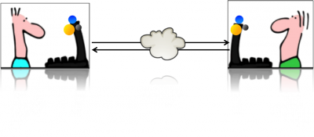

- Home
- About Saros
- Installation & Set-Up
- Support
- Develop on Saros
- Check-Out and First Steps
- Ongoing Work
- Guidelines
- Tools
- Processes
- Mailinglists
- Bug Tracker
- Saros@Sourceforge
- Google Summer of Code
- FAQ in daily practice
- Update local code to master
- Revert local changes
- Upload a new patch set
- Building in Gerrit failed!
- Get & run someones change
- Change? Patch set? Submit?
- Check Gerrit permissions
- Delete local branch
- Duplicate Location Error
- Review a change
- Run STF tests locally
- STF tests fail
- Set up STF tests
- Write STF tests
- Git use-cases
- Technical Documentation
- Research
- Contact
Real-Time Distributed Software Development
You can now create new accounts for our XMPP server saros-con.imp.fu-berlin.de (and change your password or delete existing accounts) through the website https://saros-con.imp.fu-berlin.de:5280/register/. You can still manage your account and friends-list through the Saros interface.
— Saros Project (@saros_project) 25. Juni 2018

What is Saros? What is it not?
Saros is an Open Source IDE plugin for distributed collaborative software development.
- Currently, it works only with and within Eclipse. Saros users can use all Eclipse functionality as usual.
- We are working on an IntelliJ version as well.
Saros is a real-time collaborative editor for eclipse projects.
- All collaborators have an identical copy of Eclipse projects.
- Two or more users can jointly edit files in the project.
- Each user has and modifies his or her own copy of the file locally.
- Saros keeps these copies in sync by transmitting each change to all of the other collaborators.
Saros supports up to 5 participants at once.
- Saros is designed to at least work with two participants in a session - as inherent for pair programming.
- But it supports up to 5 distributed parties in a session.
- The initiator of a session, the host, has a privileged role. To get familiar with this concept check out our comic:


Saros is not screen sharing, desktop sharing, or application sharing.
- That means for instance that it does not support joint interactive testing.
Saros can be used in various scenarios:
| Joint review |
One participant ("driver") reviews the contents of one or more files together with other participants ("observers"). Saros is set to always show the observers the same region of text (program code or whatever else) that the driver sees ("follow mode"). At any time, any participant (driver as well as observers) can highlight text with the mouse for all the others to see. Also, any participant can become driver at any time.
|
| Introducing beginners |
Much like before, except that explaining rather than reviewing is the goal. Each of the beginners (staying in the observer role) can individually peek at other regions of the file or even other files without influencing the flow of the session for the others. To do that, s/he will temporarily leave follow mode.
|
| Distributed Party Programming |
Two or more participants work together in a loosely coupled fashion. They work independently much of the time, but can call one of the others to help whenever the need arises, for possibly only a very short time or for a longer episode. In this mode, distributed work can even be more powerful than working in the same room, as nobody needs to leave a seat to help multiple others in the course of an hour. Just think how this can speed up the coordination work just before release time after a code freeze!
|
| Distributed Pair Programming |
Is a particular form of Distributed Party Programming in which two people develop code or text in continuous close collaboration, discussing the approach and combining the best of their ideas.
|
What others think
Saros (pronounced “zar-ose”, btw) is a set of extensions to Eclipse to support real-time collaboration. It is a research prototype at the moment, and as such has some rough edges. In 15 or 20 years, most programs will be written through real-time collaboration, so for me it’s worth a bit of pain today to experience the future.Kent Beck - Three Rivers Institute Blog
Saros has been one of the key factors in being able to accommodate remote workers like me. For that I'm extremely grateful.Saros User - via e-mail
For more comments read on Sourceforge.